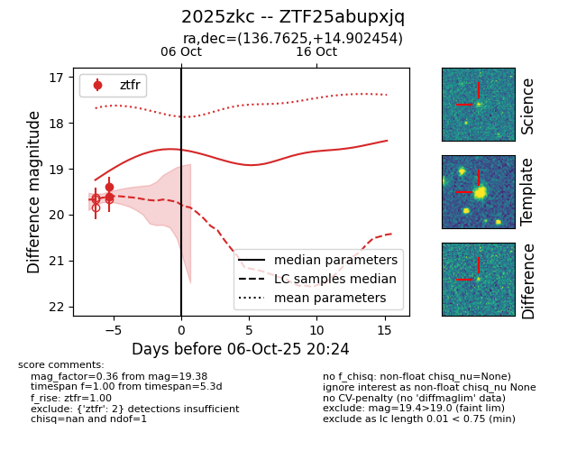
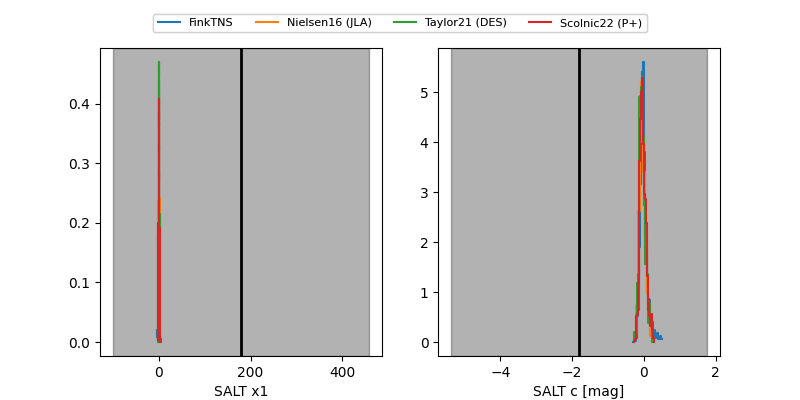

FINK: ZTF25abupxjq
Lasair: ZTF25abupxjq
ALeRCE: ZTF25abupxjq
TNS: 2025zkc
YSE: 2025zkc
ZTF25abupxjq (ztf,fink)
2025zkc (tns,yse)
equatorial (ra, dec) = (136.7625,+14.90245)
galactic (l, b) = (214.1394,+36.65504)


last ztfr=19.38
2 ztfr detections